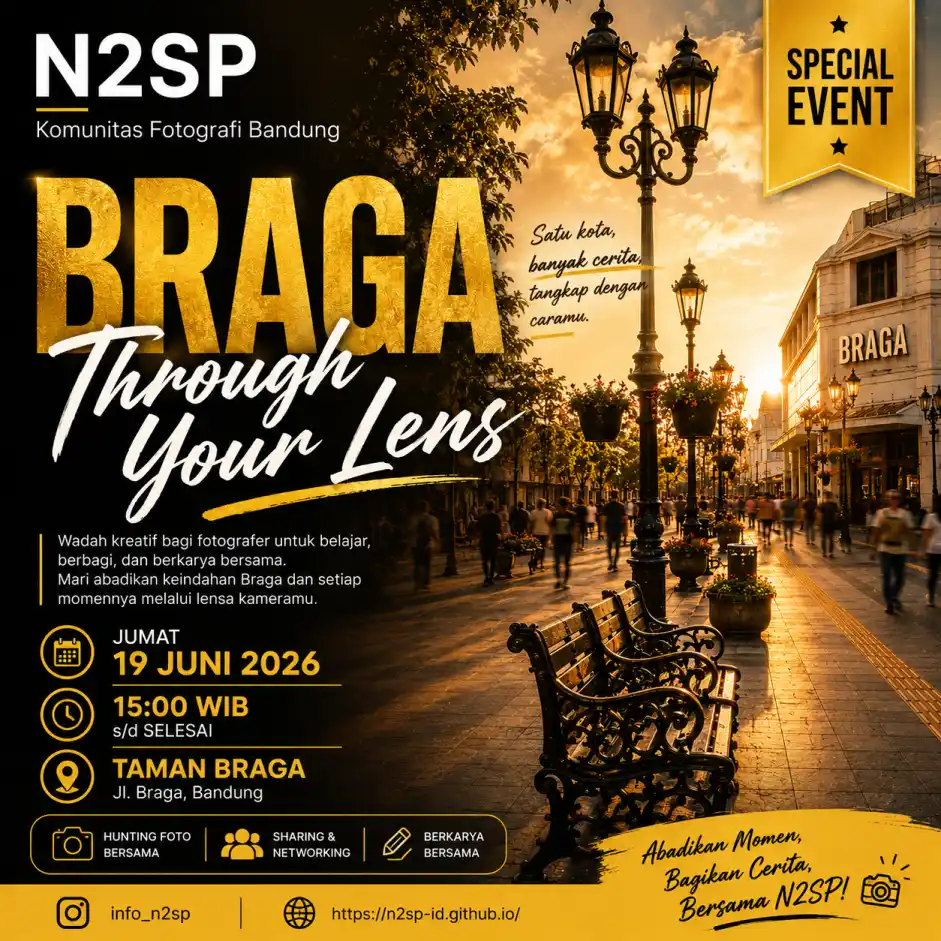

Satu Kota, Banyak Cerita, Tangkap Dengan Caramu

Kawasan ikonik Braga kembali menjadi ruang berkumpul para pecinta fotografi dalam kegiatan Braga Through Your Lens 2026 yang diselenggarakan oleh N2SP Komunitas Fotografi Bandung.
Acara yang berlangsung pada Jumat, 19 Juni 2026 ini menghadirkan suasana kreatif yang penuh semangat belajar, berbagi pengalaman, serta menghasilkan karya visual dari salah satu kawasan paling bersejarah di Kota Bandung.
Sekitar 30 fotografer dari berbagai latar belakang hadir mengikuti kegiatan ini. Mulai dari fotografer pemula hingga fotografer berpengalaman berkumpul untuk mengeksplorasi sudut-sudut menarik Braga melalui lensa kamera mereka.
Event ini juga menghadirkan 5 model photoshoot yang memberikan banyak peluang eksplorasi visual bagi peserta, mulai dari portrait photography, fashion portrait, hingga konsep cinematic street photography.
Salah satu momen yang paling dinantikan peserta adalah saat memasuki golden hour di sore hari. Cahaya matahari yang hangat berpadu dengan arsitektur klasik Braga menghasilkan suasana yang sangat ideal untuk fotografi portrait maupun street photography.
Banyak peserta memanfaatkan cahaya alami tersebut untuk menghasilkan karya visual yang dramatis, artistik, dan memiliki karakter yang kuat.
Selama kegiatan berlangsung, peserta bebas mengeksplorasi berbagai gaya fotografi sesuai karakter masing-masing.
Kawasan Braga menawarkan beragam elemen visual menarik seperti bangunan bersejarah, lampu jalan klasik, aktivitas masyarakat, serta suasana kota yang hidup menjelang malam hari.
Kehadiran lima model turut memberikan variasi konsep pemotretan sehingga peserta dapat berlatih directing model, mengatur komposisi, serta mengeksplorasi teknik pencahayaan alami secara langsung.
Selain hunting foto, acara ini juga menjadi wadah untuk berbagi ilmu dan pengalaman antar peserta.
Berbagai diskusi ringan mengenai teknik fotografi, pemilihan lensa, pengaturan kamera, editing foto, hingga personal branding fotografer berlangsung secara santai di sela-sela kegiatan.
Suasana yang terbuka dan penuh keakraban membuat peserta baru dapat belajar langsung dari fotografer yang lebih berpengalaman.
Setiap sudut Braga memiliki cerita yang berbeda untuk diabadikan. Dari aktivitas pejalan kaki, bangunan heritage, hingga suasana senja yang khas, seluruh elemen tersebut menjadi sumber inspirasi bagi para peserta.
Meskipun berada di lokasi yang sama, setiap fotografer berhasil menghasilkan karya yang unik sesuai gaya visual dan sudut pandang masing-masing.
Braga Through Your Lens 2026 menjadi bukti bahwa fotografi bukan hanya tentang menghasilkan gambar yang menarik, tetapi juga tentang membangun relasi, berbagi pengalaman, dan menciptakan kenangan bersama.
Dengan kehadiran sekitar 30 fotografer dan 5 model, kegiatan ini berlangsung meriah dan penuh energi positif hingga akhir acara. N2SP terus berkomitmen menjadi wadah kreatif bagi para pecinta fotografi untuk berkembang, berjejaring, dan berkarya bersama.
"Satu Kota, Banyak Cerita, Tangkap Dengan Caramu"
🎬 Watch the Official Aftermovie — Braga Through Your Lens 2026